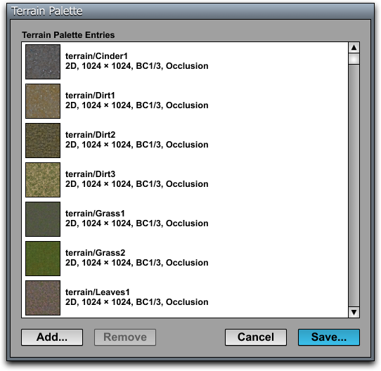

Terrain Palettes
{kind=link}

A terrain palette is a set of textures that can be used to paint voxel-based terrain geometry. A terrain palette texture resource is a special kind of .tex file that contains references to several other texture maps. The terrain palette is a very small file because the texture image data remains in the referenced resources. A different terrain palette would typically be created for each world, or possibly for each terrain block in a large world containing multiple terrain blocks. The entries in a terrain palette are just ordinary 2D texture maps that have already been imported using the Texture Importer.
Creating a Terrain Palette Texture Resource
A terrain palette is created by selecting the Generate Terrain Palette command from the C4 Menu or by entering texpal in the Command Console. The Terrain Palette dialog (shown in Figure 1) then appears with an empty list of input texture maps. Texture maps are added to the palette by clicking the Add button and choosing the textures that you want to be part of the palette. Multiple texture maps can be added at once by holding the Shift key to choose multiple files from the file selection dialog that appears after you click the Add button.
Once you have added all of the texture maps that will be part of the terrain palette, click the Save button. You will then be asked to name the output texture resource containing your new palette.
Input Texture Map Requirements
The texture maps to be included in a terrain palette must satisfy the following requirements:
- All textures in the palette have the same dimensions.
- The width and height of the palette entries are at least 32 pixels.
- The texture size is square (i.e., the width and height are the same).
- All textures use block compression (shown as BC1/3 in the list of input textures).
- All textures have the same alpha channel usage.
This information is shown for each entry in the list of input textures so that it's easy to spot problems.
Command Line
The texpal command can also be used as a standalone command line tool. (The dialog appears when no parameters are specified.) The command has the following usage:
texpal -o <output-name> <input-name-1> <input-name-2> ...
The output-name is the name of the output terrain palette file (without extension) relative to the Data directory. This name does include the top-level directory name in its path.
Each of the input-name identifiers must name an existing texture map resource using the standard resource naming conventions, meaning that the top-level directory name under the Data folder is not included in the path. Any number of input texture maps can be specified, but the number of entries should be kept as small as possible for best performance.